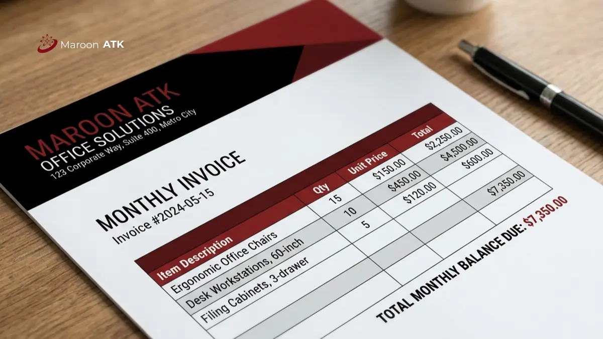

Apa Itu Layanan One-Stop Pengadaan Furniture Kantor MAROON ATK?
Layanan one-stop pengadaan furniture kantor MAROON ATK adalah konsep konsolidasi seluruh kebutuhan interior dan perlengkapan kantor dari satu vendor terpercaya tanpa harus mengelola banyak supplier eceran.
Klien dapat melengkapi kantor dengan meja staf, kursi ergonomis, lemari arsip baja, hingga sofa tamu, sekaligus mengintegrasikan teknologi ruang rapat pintar seperti videotron dan papan tulis digital dalam satu proses pengadaan.
Pendekatan ini memudahkan tim General Affairs karena hanya perlu berkoordinasi dengan satu penanggung jawab untuk seluruh kebutuhan interior kantor, mulai dari furniture dasar hingga perangkat teknologi ruang rapat. Skema ini berbeda dari sekadar membeli furniture dari satu toko, karena mencakup juga dukungan dokumen legal dan layanan purnajual dalam satu paket kerja sama.

Tren Material Ramah Lingkungan untuk Custom Furniture Kantor Masa Kini
Kenali material bambu laminasi, kayu FSC, dan baja daur ulang demi mendukung target ESG kantor Anda.
Bagaimana Fasilitas Custom Ukuran pada Pengadaan Furniture Kantor?
Fasilitas custom ukuran pada pengadaan furniture kantor MAROON ATK memungkinkan penyesuaian dimensi dan komposisi barang sesuai kebutuhan spesifik anggaran dan tata letak ruangan perusahaan.
Setiap kantor memiliki denah dan kebutuhan berbeda, sehingga furniture standar pabrikan tidak selalu sesuai dengan ruang yang tersedia. MAROON ATK melayani kustomisasi ukuran meja, partisi workstation, hingga credenza penyimpanan agar dapat menyesuaikan dengan luas ruangan sekaligus mempertahankan efisiensi anggaran yang ditetapkan klien.
Kisaran harga dapat bervariasi tergantung spesifikasi, volume pesanan, dan lokasi pengiriman. Konsultasikan denah dan kebutuhan Anda langsung ke tim kami untuk mendapatkan penawaran resmi.
Bagaimana Sistem Monthly Invoicing pada Pengadaan Furniture Kantor Bekerja?
Sistem monthly invoicing pada pengadaan furniture kantor menggabungkan seluruh transaksi dalam satu bulan menjadi satu tagihan terpadu lengkap dengan PO matching, BAST, dan e-Faktur PPN 11 persen.
Sistem ini dirancang untuk memudahkan kelancaran akuntansi klien, terutama perusahaan atau instansi yang melakukan pemesanan furniture secara bertahap dalam satu periode. Berita Acara Serah Terima ditandatangani langsung di lokasi setiap kali barang tiba, sementara Surat Penawaran Harga resmi disediakan di awal kesepakatan sebagai dasar administrasi sebelum proses produksi dimulai.

Contoh dokumen monthly invoicing untuk pengadaan furniture kantor korporat yang mempermudah pencatatan akuntansi dan rekonsiliasi faktur pajak.
Apa Keuntungan Layanan Pengemasan Khusus dan Instalasi Gratis?
Keuntungan layanan pengemasan khusus dan instalasi gratis pada pengadaan furniture kantor adalah memudahkan distribusi barang per divisi tanpa membebani tim internal dengan proses teknis.
Layanan Sub-Packaging Delivery memastikan furniture dan pesanan ATK dikemas serta dilabeli secara spesifik untuk masing-masing divisi atau departemen, sehingga tim General Affairs tidak perlu memilah barang secara manual saat penerimaan. MAROON ATK juga memberikan layanan gratis instalasi, setting, hingga training penggunaan aset, ditambah ketersediaan buffer stock di gudang untuk menjamin klien tidak mengalami putus pasokan pada kebutuhan rutin.
Bagaimana Layanan Pengadaan Furniture Kantor di Jakarta?
Pengadaan furniture kantor di Jakarta dilayani MAROON ATK dengan dukungan gudang pusat dan tim instalasi yang siap menjangkau kawasan perkantoran maupun instansi pemerintah di ibu kota.
Kami telah melayani berbagai instansi dan perusahaan di Jakarta dengan kebutuhan furniture kantor dalam skala menengah hingga besar, mulai dari renovasi ruang kerja staf hingga penataan ulang ruang rapat korporat. Kepadatan aktivitas bisnis di Jakarta membuat kecepatan instalasi dan ketersediaan buffer stock menjadi pertimbangan penting bagi klien di wilayah ini.
Untuk konsultasi kebutuhan furniture kantor di Jakarta, silakan hubungi tim kami melalui WhatsApp konsultasi furniture Jakarta.
Bagaimana Layanan Pengadaan Furniture Kantor di Surabaya?
Pengadaan furniture kantor di Surabaya dilayani MAROON ATK dengan koordinasi pengiriman yang disesuaikan untuk kebutuhan korporat dan instansi di wilayah Jawa Timur.
Kami telah melayani berbagai instansi di Surabaya dengan pendekatan konsultasi kebutuhan ruang sebelum proses produksi custom dimulai, termasuk penyesuaian jadwal pengiriman dengan operasional kantor klien agar tidak mengganggu aktivitas kerja harian. Bagi perusahaan dengan cabang di beberapa titik di Jawa Timur, tim kami juga dapat mengoordinasikan pengiriman bertahap sesuai prioritas ruangan.
Untuk penawaran furniture kantor di Surabaya, silakan hubungi tim kami melalui WhatsApp konsultasi furniture Surabaya.
Bagaimana Layanan Pengadaan Furniture Kantor di Malang?
Pengadaan furniture kantor di Malang dilayani MAROON ATK dengan opsi kustomisasi yang sesuai kebutuhan kampus, sekolah, maupun perusahaan swasta setempat.
Kami telah melayani berbagai instansi pendidikan dan swasta di Malang untuk kebutuhan furniture ruang kelas digital hingga ruang staf administrasi, termasuk penataan meja dan partisi yang menyesuaikan kapasitas ruang kelas atau laboratorium. Siklus tahun ajaran di Malang membuat sebagian besar permintaan datang menjelang semester baru, sehingga perencanaan pemesanan lebih awal disarankan bagi institusi pendidikan.
Untuk penawaran furniture kantor di Malang, silakan hubungi tim kami melalui WhatsApp konsultasi furniture Malang.
Bagaimana Layanan Pengadaan Furniture Kantor di Denpasar?
Pengadaan furniture kantor di Denpasar dilayani MAROON ATK dengan opsi furniture yang dapat disesuaikan untuk kebutuhan perkantoran maupun industri pariwisata di Bali.
Kami telah melayani berbagai instansi dan pelaku usaha di Denpasar dengan kebutuhan furniture kantor custom yang menyesuaikan karakter ruang kerja lokal, termasuk kombinasi furniture bergaya tropis untuk area lobi maupun ruang tamu instansi. Karakteristik industri pariwisata di Bali membuat sebagian klien juga membutuhkan furniture untuk area semi-terbuka, yang memerlukan pertimbangan material berbeda dari ruang kerja tertutup biasa.
Untuk penawaran furniture kantor di Denpasar, silakan hubungi tim kami melalui WhatsApp konsultasi furniture Denpasar.
Bagaimana Layanan Pengadaan Furniture Kantor di Makassar?
Pengadaan furniture kantor di Makassar dilayani MAROON ATK dengan dukungan distribusi yang menjangkau kebutuhan instansi di wilayah Indonesia Timur.
Kami telah melayani berbagai instansi di Makassar dengan proses pengadaan furniture kantor yang mengikuti standar dokumen legal yang sama dengan kota-kota lain, termasuk Surat Penawaran Harga dan e-Faktur Pajak yang konsisten di setiap kota layanan. Sebagai titik distribusi ke wilayah Indonesia Timur, waktu pengiriman ke Makassar dikoordinasikan sejak awal agar sesuai dengan jadwal instalasi yang disepakati klien.
Untuk penawaran furniture kantor di Makassar, silakan hubungi tim kami melalui WhatsApp konsultasi furniture Makassar.

Cara Menilai Legalitas Supplier Alat Kantor Jakarta Sebelum Kontrak
Panduan verifikasi NIB, NPWP, kepatuhan e-Faktur Pajak, dan kelayakan dokumen audit pengadaan B2B.
Sebelum memesan, Anda dapat mempelajari terlebih dahulu tren material yang digunakan melalui panduan custom furniture kantor atau memverifikasi kriteria legalitas vendor melalui panduan supplier alat kantor jakarta sebelum menentukan pilihan akhir.
Untuk melihat katalog lengkap produk furniture, kunjungi halaman pengadaan furniture kantor atau kirim daftar kebutuhan Anda langsung ke tim kami melalui konsultasi WhatsApp MAROON ATK.
Mulai Pengadaan Furniture Kantor Custom Anda
Dapatkan skema one-stop procurement, simulasi layout ruangan 3D gratis, serta penagihan bulanan terpadu untuk perusahaan Anda bersama MAROON ATK.
Pertanyaan yang Sering Diajukan
Pemesanan dimulai dengan konsultasi kebutuhan via WhatsApp, dilanjutkan penerbitan Surat Penawaran Harga, lalu produksi custom sesuai ukuran dan instalasi di lokasi.
Monthly invoicing adalah sistem penagihan terpusat yang menggabungkan seluruh transaksi dalam sebulan menjadi satu tagihan lengkap dengan PO matching, BAST, dan e-Faktur PPN.
Ya, layanan pengadaan furniture kantor MAROON ATK menjangkau Jakarta, Surabaya, Malang, Denpasar, Makassar, serta pengiriman ke seluruh Indonesia.
Lama produksi bergantung pada jenis dan jumlah unit yang dipesan, sehingga estimasi waktu pastinya disampaikan tim MAROON ATK setelah spesifikasi dan volume pesanan disepakati.

Asher Angelica
Praktisi procurement dan konsultasi interior korporat yang berfokus pada standarisasi material ramah lingkungan (ESG), efisiensi tata ruang kantor, dan tata kelola pengadaan fasilitas B2B di Indonesia.